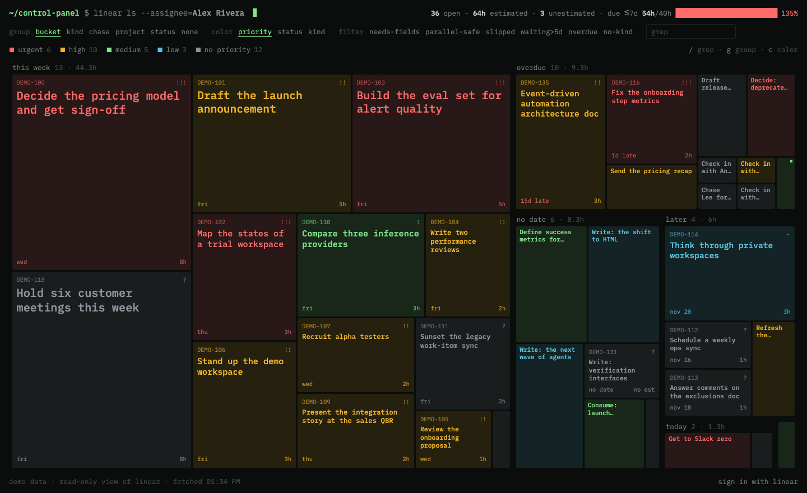

writes
Your agents
File, schedule, chase and close work in Linear, following one shared convention.
Linear · one screen · read-only
Control Panel turns every open Linear issue assigned to you into one mosaic. Tile size is effort in hours. Nothing hides and nothing scrolls. Your agents keep Linear tidy. Control Panel only reads.

sample data · grouped by bucket · colored by priority
writes
File, schedule, chase and close work in Linear, following one shared convention.
holds everything
Issues, labels, estimates and due dates. The only place work is tracked.
reads
Signs in with Linear's read scope and draws your whole plate. It never writes.
No database and no sync. If it is not in Linear, it is not on your plate.
Each open issue is a tile. Search and filters dim tiles instead of hiding them, so the whole plate stays in view.
Tile area is the estimate in hours. A check-in counts as a 15-minute chase. The load bar shows hours due this week against a 40-hour week.
Overdue, today, tomorrow, this week and later. Or group by kind, by the person you are chasing, by project or by status.
Issues that break the convention light up under needs-fields with the exact fix. Slips and waiting time come from Linear's own history.
$ open "https://control-panel-ivory.vercel.app/#needs-fields"
10/36 lit · esc clears
$ node lint.mjs PLAN-125.json
PLAN-125 CHASE_MALFORMED Write "Chase: <who> — <what you need from them>"
$ node lint.mjs PLAN-125.json
PLAN-125 ok
Every filter is a link: #needs-fields #parallel-safe #slipped #waiting #overdue #no-kind
Control Panel reads a small, versioned convention. Hand it to any agent that touches Linear. It names the labels to set, the unit for estimates, and four description lines. A bundled linter checks an issue before it is saved.
| Kind | Labels | Fields | Description lines |
|---|---|---|---|
to-do |
Kind to-do, Mode focus or parallel |
estimate in hours (1, 2, 3, 5, 8, 13), due date once scheduled | Source: Next step: Done when: |
check-in |
Kind check-in |
due date: the day to chase next | Source: Chase: who — what Done when: |
| your own | any other label in the Kind group | none | none |
Source: Pricing sync with Maya, Nov 3
Next step: Draft the tier table in the pricing doc
Done when: Maya signs off on the tiers in the docLabels to-do + focus · estimate 3 hours · due Thu
Source: #eng-api thread, Nov 5
Chase: Priya and Sam — cutoff values and V1 dates
Done when: Dates are posted in the project updateLabel check-in · no estimate · due on the next chase day
Control Panel is only as good as the issues your agents write. Three steps get any agent with Linear access writing them the right way. Your agent needs to reach Linear, for example through Linear's MCP server.
curl -fsSL https://vivekkaushal.com/control-panel/skill/install.sh | sh
Installs to ~/.claude/skills/control-panel. The linter needs Node 20 or later.
Before you create, schedule or edit Linear issues, read and follow https://vivekkaushal.com/control-panel/skill/SKILL.md
Add this line to AGENTS.md, your rules file, or the agent's instructions.
Read https://vivekkaushal.com/control-panel/skill/SKILL.md and follow it whenever you create, schedule or edit Linear issues for me. Then set me up: 1. In my Linear team, check for single-select label groups named Kind (to-do, check-in) and Mode (focus, parallel). If they are missing, show me your plan and create them only after I approve. 2. List the open issues assigned to me. For each one, add the right Kind label, add a Mode label to every to-do, and fix the Source, Next step, Done when and Chase lines. Never invent a value. Tell me what you could not fill. 3. Lint every issue you changed with https://vivekkaushal.com/control-panel/skill/scripts/lint.mjs and report what still fails.
Your agent asks before it changes labels, and it never makes up a missing date, estimate or source.
Sign in and turn on needs-fields. Every lit tile is an issue your agent still has to fix,
with the exact reason. From then on, your agent keeps new issues in shape on its own.
Free · read-only · built on Linear